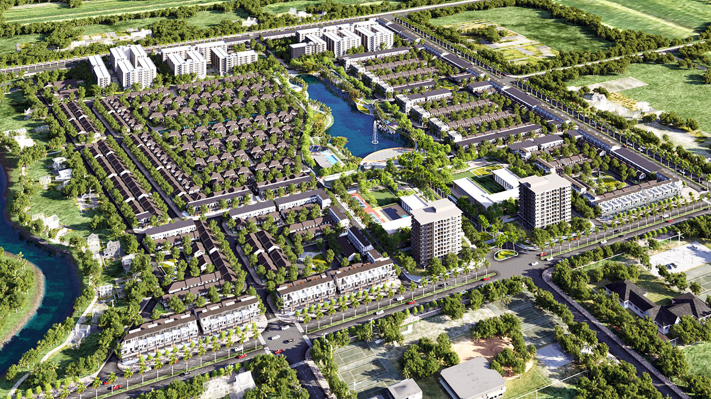
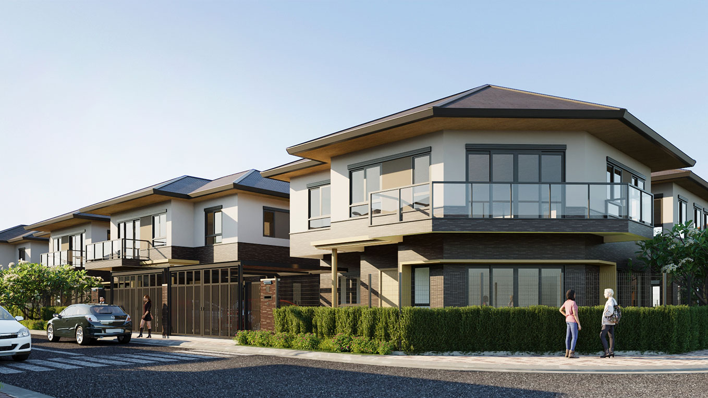
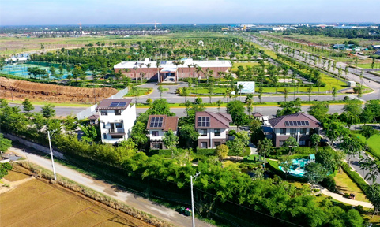
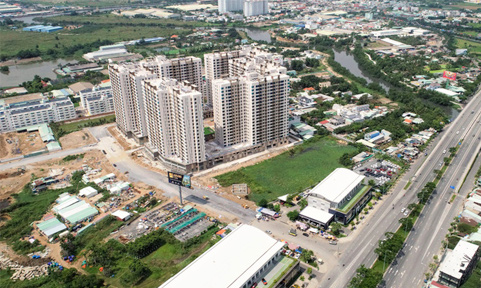
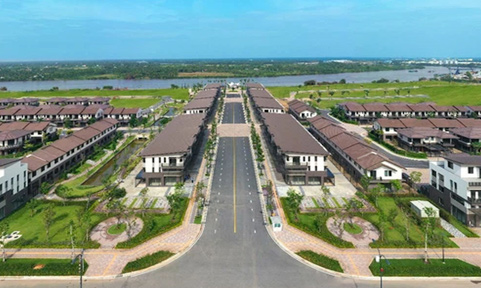

<!DOCTYPE html>
<html>

<head>
  <meta charset="utf-8">
  <meta name="viewport" content="width=device-width, initial-scale=1, shrink-to-fit=no">
  <meta name="description" content="">
  <meta name="author" content="">
  <meta name="generator" content="">
  <!-- css-->
  <link rel="stylesheet" type="text/css" href="css/bootstrap.css">
  <link rel="stylesheet" type="text/css" href="css/animate.min.css">
  <link rel="stylesheet" type="text/css" href="css/owl-carousel/owl.carousel.css">
  <link rel="stylesheet" type="text/css" href="css/theme.css">
  <!-- fonts-->
  <link rel="stylesheet" type="text/css" href="fonts/stylesheet.css">
</head>

</html>

<body>
  <!-- Header-->
  <div  id="header">
    <nav class="navbar navbar-expand-lg navbar-light justify-content-between"><a class="navbar-brand" href="#"></a>
      <button class="navbar-toggler" type="button" data-toggle="collapse" data-target="#navbarNavAltMarkup"
        aria-controls="navbarNavAltMarkup" aria-expanded="false" aria-label="Toggle navigation"><span
          class="navbar-toggler-icon"></span></button>
      <div class="collapse navbar-collapse" id="navbarNavAltMarkup">
        <div class="navbar-nav"><a class="nav-item nav-link" href="index.html">Trang Chủ</a><a class="nav-item nav-link"
            href="gioi-thieu.html">Giới Thiệu</a><a class="nav-item nav-link" href="vi-tri.html">Vị trí</a><a class="nav-item nav-link"
            href="quy-hoach.html">Quy hoạch</a><a class="nav-item nav-link" href="san-pham.html">Sản phẩm</a><a class="nav-item nav-link"
            href="tien-ich.html">Tiện ích</a><a class="nav-item nav-link" href="thu-vien.html">Thư viện</a><a class="nav-item nav-link"
            href="tien-do.html">Tiến độ</a><a class="nav-item nav-link" href="tin-tuc.html">Tin tức</a><a class="nav-item nav-link"
            href="lien-he.html">Liên hệ</a></div>
      </div>
    </nav>
  </div>
  <div id="fullpage">
    <section class="section" id="tt" style="padding-bottom: 0;">
      <div class="container">
        <div class="tintuc_chitiet justify-content-center align-items-center">
          <div class="title-tt-chitiet">
            LÀN SÓNG ĐẦU TƯ NÂNG TẦM BẤT ĐỘNG SẢN LONG AN
          </div>
          <div class="date_tt_chitiet">Ngày 12/06/2021</div>
          <div class="subtitle_tt_chitiet">Bên cạnh hạ tầng, một loạt dự án đầu tư phát triển công nghiệp, dịch vụ chuẩn
            bị triển khai tại tỉnh Long An đang hứa hẹn kích hoạt một làn sóng đầu tư mới vào lĩnh vực bất động sản.
          </div>
          <div></div>
          <div class="subtitle_tt_chitiet">Những dự án hạ tầng, công nghiệp "tỉ đô"</div>
          <p class="tintuc_chitiet_paragraph">
            Long An hiện đang được quan tâm xây dựng cơ sở hạ tầng rất tốt với các dự án cao tốc, quốc lộ, tỉnh lộ nhằm
            xây dựng hệ thống giao thông tiện lợi nhất cho việc phát triển kinh tế - xã hội.
          </p>
          <p class="tintuc_chitiet_paragraph">
            Giai đoạn 2021 - 2025, Long An dự kiến chi đến gần 30.000 tỉ đồng cho hệ thống hạ tầng, quyết tâm hoàn thiện
            đường ĐT830E, đoạn từ nút giao với cao tốc TPHCM - Trung Lương đến ĐT830 (đường vành đai 4), và hoàn thiện
            trục động lực TPHCM - Long An - Tiền Giang, cao tốc Bến Lức - Long Thành.
          </p>
          <p class="tintuc_chitiet_paragraph">
            Bên cạnh đó, tuyến ĐT827E là trục động lực kết nối TPHCM - Long An - Tiền Giang dự kiến được đầu tư với số
            vốn hơn 20.000 tỉ đồng. Tuyến đường này có ý nghĩa chiến lược, nâng tầm hệ thống giao thông vận tải của Long
            An với kỳ vọng thu hút đầu tư không chỉ cho tỉnh mà còn cả khu vực Tây Nam Bộ.
          </p>
          <p class="tintuc_chitiet_paragraph">
            Riêng năm 2021, Long An sẽ khởi công tám dự án như đường Lương Hòa - Bình Chánh, Hựu Thạnh - Tân Bửu,
            ĐT826E, ĐT824… Các dự án khác như nâng cấp, mở rộng quốc lộ 50, quốc lộ 1, cao tốc Đức Hòa - Chơn Thành
            (Bình Phước), metro Bến Thành - Tân Kiên... cũng sẽ lần lượt xây dựng. Bên cạnh Bến Lức, các huyện còn lại
            được hưởng lợi trực tiếp từ hệ thống hạ tầng này gồm Cần Giuộc, Đức Hòa, thành phố Tân An…
          </p>
          <p class="tintuc_chitiet_paragraph">
            Không chỉ sở hữu hàng loạt dự án hạ tầng lớn, Long An cũng đang nỗ lực đầu tư rất nhiều dự án phát triển
            công nghiệp và dịch vụ "tỉ đô". Cụ thể, Long An đang quy hoạch khu kinh tế 3.200ha xoay quanh cảng quốc tế
            Long An và danh mục 16 dự án kêu gọi đầu tư trọng điểm như:
          </p>
          <p class="tintuc_chitiet_paragraph">
            - Khu kinh tế cửa khẩu Long An (13.080ha);
          </p>
          <p class="tintuc_chitiet_paragraph">
            - Các KCN Phú An Thạnh (1.000ha), Việt Phát (918ha), Prodezi (400ha);
          </p>
          <p class="tintuc_chitiet_paragraph">
            - Trung tâm nghiên cứu sinh học Đồng Tháp Mười (83ha); khu tiếp nhận kho vận - logistics tại Cảng quốc tế
            Long An (147ha); trung tâm kho vận và dịch vụ logistics ở Bến Lức (10ha)...
          </p>
          <div></div>
          <p class="tintuc_chitiet_paragraph">
            Định hướng phát triển của Long An là hình thành các khu kinh tế công nghệ cao gắn với xây dựng đô thị thông
            minh. Tại tọa đàm "Định hướng phát triển vùng kinh tế công nghệ cao" do UBND tỉnh Long An tổ chức tháng 4
            vừa qua, đại diện nhiều tập đoàn lớn tại Việt Nam như Microsoft, Dell EMC, Nvidia, SAP, Siemens... đã hứa
            hẹn đầu tư các dự án quy mô lớn vào Long An trong thời gian tới.
          </p>
          <p class="tintuc_chitiet_paragraph">
            Quý 1-2021, Long An vươn lên dẫn đầu cả nước về thu hút vốn FDI với tổng vốn đầu tư đăng ký là 3,2 tỷ USD.
            Thông tin này đang kích hoạt một làn sóng đầu tư bất động sản mới vào Long An.
          </p>

          <div class="subtitle_tt_chitiet">Những dự án hạ tầng, công nghiệp "tỉ đô"</div>
          <p class="tintuc_chitiet_paragraph">
            Quan tâm các dự án hạ tầng giao thông, thu hút đầu tư công nghiệp, Long An cũng không quên kêu gọi đầu tư
            phát triển các khu đô thị lớn, hệ thống tiện ích phong phú, đa dạng. Với sự quyết liệt của chính quyền Long
            An, dự báo các huyện Đức Hòa, Bến Lức, Cần Giuộc, Cần Đước sẽ sớm trở thành các đô thị vệ tinh hiện đại và
            các khu, cụm công nghiệp công nghệ cao "chia lửa" với TPHCM.
          </p>
          <p class="tintuc_chitiet_paragraph">
            Thực tế, dù nằm liền kề TPHCM nhưng tỷ lệ đô thị hóa của Long An hiện đang khá thấp, chỉ khoảng 24%. Thị
            trường bất động sản Long An dù đang có bước phát triển khá tốt nhưng vẫn chậm so với Bình Dương, Đồng Nai.
          </p>
          <p class="tintuc_chitiet_paragraph">
            Các dự án theo mô hình đại đô thị hay đô thị phức hợp vẫn còn rất ít, một khi công nghiệp phát triển bùng
            nổ, hàng chục ngàn chuyên gia, công nhân đổ về làm việc thì sẽ khó đáp ứng được nhu cầu nhà ở cũng như sử
            dụng các tiện ích thương mại - dịch vụ, giáo dục, y tế, vui chơi giải trí.
          </p>
          <p class="tintuc_chitiet_paragraph">
            Chính vì thế, Long An đang rất kỳ vọng và khuyến khích doanh nghiệp đầu tư những dự án đô thị đủ tầm vóc làm
            điểm nhấn, từ đó nhân rộng mô hình phát triển. Một dự án điển hình được Long An khuyến khích là Waterpoint
            có quy mô lên đến 355ha nằm bên sông Vàm Cỏ Đông với đầy đủ tiện ích được đầu tư bởi tập đoàn Nam Long và
            các đối tác gồm TBS Group, Tân Hiệp, Nishi Nippon Railroad (Nhật Bản).
          </p>
          <div class="name_author">T.D.V</div>

        </div>
      </div>
    </section>


    <section class="section" id="tt" style="padding: 0 0 70px 0;">
      <div class="container">
        <div class="justify-content-center align-items-center">
          <div class="ct">
            <div class="text-center heading">
              <h3 class="fontstyle2">Tin tức khác</h3>
            </div>
            <div class="row">
              <div class="col-lg-4 col-12">
                <a href="#">
                  <div class="image"></div>
                  <div class="text">
                    <h3 class="title_tt news_tt">LÀN SÓNG ĐẦU TƯ NÂNG TẦM BẤT ĐỘNG SẢN LONG AN</h3>
                    <span class="date_tt">Ngày 12/06/2021</span>
                    <p class="subtitle_tt">
                      Bên cạnh hạ tầng, một loạt dự án đầu tư phát triển công nghiệp, dịch vụ chuẩn bị triển khai tại
                      tỉnh Long An đang hứa hẹn kích hoạt một làn sóng đầu tư mới vào lĩnh vực bất động sản.
                    </p>
                  </div>
                </a>
              </div>
              <div class="col-lg-4 col-12">
                <a href="#">
                  <div class="image"></div>
                  <div class="text">
                    <h3 class="title_tt news_tt">SỰ KHÁC NHAU GIỮA BĐS KHU ĐÔNG, KHU NAM VÀ KHU TÂY SÀI GÒN NHƯ THẾ NÀO?
                    </h3>
                    <span class="date_tt">Ngày 12/06/2021</span>
                    <p class="subtitle_tt">
                      Nếu khu Đông và khu Nam Tp.HCM có nhiều dự án BĐS được triển khai, hạ tầng đầu tư mạnh thu hút
                      dòng tiền của NĐT thì khu Tây có vẻ “trầm lắng” hơn về nhu cầu đầu tư cũng như nguồn cung dự án,
                      nhưng lại nổi bật ở nhu cầu mua để ở thực. Thậm chí, có dự án tỉ lệ mua để ở chiếm đến 80-90%.
                    </p>
                  </div>
                </a>
              </div>
              <div class="col-lg-4 col-12">
                <a href="#">
                  <div class="image"></div>
                  <div class="text">
                    <h3 class="title_tt news_tt">NAM LONG GROUP: ĐỊNH HƯỚNG PHÁT TRIỂN KHU ĐÔ THỊ TÍCH HỢP</h3>
                    <span class="date_tt">Ngày 12/06/2021</span>
                    <p class="subtitle_tt">
                      Tại ĐHCĐ vừa diễn ra, Chủ tịch HĐQT Công ty CP Đầu tư Nam Long (Nam Long Group), ông Nguyễn Xuân
                      Quang, cho biết Nam Long xác nhận Tập đoàn này sẽ chuyển dịch từ nhà phát triển nhà ở "vừa túi
                      tiền" hàng đầu thành nhà phát triển khu đô thị tích hợp.
                    </p>
                  </div>
                </a>
              </div>

            </div>
            <div class="pagination_td">
              <a href="#">
                <div class="tt_pagination active">1</div>
              </a>
              <a href="#">
                <div class="tt_pagination">2</div>
              </a>
              <a href="#">
                <div class="tt_pagination">3</div>
              </a>
            </div>
          </div>
        </div>
      </div>
    </section>

  </div>
  <!-- Footer-->
  <section class="section" id="footer">
    <div class="container">
      <div class="row align-items-center">
        <div class="col-lg-5 order-lg-last col-12">
          <form class="form _right">
            <p class="style1">Địa chỉ dự án: <span>Phường Hưng Thạnh, quận Cái Răng, TP. Cần Thơ</span></p><a
              class="style1" href="#">Xem google Map</a>
            <h4>Đăng ký nhận thông tin </h4>
            <p class="style2">Nếu quan tâm hay cần tư vấn thông tin liên quan dự án, Quý khách vui lòng điền nội dung
              theo form dưới chúng tôi sẽ trả lời trong thời gian sớm nhất. </p>
            <input class="input" type="text" placeholder="Họ tên (*)" required>
            <input class="input" type="email" placeholder="Email" required>
            <input class="input" type="phone" placeholder="Điện thoại (*)" required>
            <textarea class="input" placeholder="Nội dung" required></textarea>
            <button class="xt1" type="submit">Đăng ký</button>
          </form>
        </div>
        <div class="col-lg-7 ctright _left col-12">
          <h1 class="marginbt20">Thông tin chủ đầu tư</h1>
          <div class="row">
            <div class="col-lg-4 col-12"></div>
            <div class="col-lg-8 col-12">
              <div class="box">
                <p class="title">CÔNG TY CỔ PHẦN ĐẦU TƯ NAM LONG</p>
                <p><span style='font-weight: bold'>Trụ sở:</span> Số 6 Nguyễn Khắc Viện, P. Tân Phú, Quận 7, TP.HCM</p>
                <p>Điện thoại: <a href="tel:(028) – 54 16 17 18">(028) – 54 16 17 18</a></p>
              </div>
              <div class="box">
                <p><span style='font-weight: bold'>Chi nhánh Cần Thơ:</span> A2-1 Đường số 10, Khu nhà ở Nam Long,
                  P.Hưng Thạnh, Q.Cái Răng, TP. Cần Thơ</p>
                <p>Điện thoại: <a href="tel:0710.3 837366">0710.3 837366</a></p>
                <p>Email:<a href="mailto:info@namlongvn.com">info@namlongvn.com</a></p>
              </div>
            </div>
          </div>
          <div class="box2">
            <div class="img"></div>
            <p>Chung tay kiến tạo môi trường sống, sản phẩm giá trị vì cộng đồng.<span>Bằng 29 năm kinh nghiệm phát
                triển Bất động sản tại thị trường Việt Nam, Nam Long tập trung tích lũy các quỹ đất tại các tỉnh thành
                trọng điểm có tốc độ tăng trưởng kinh tế mạnh, hạ tầng kết nối liên vùng tại Thành phố Hồ Chí Minh, Long
                An, Đồng Nai, Cần Thơ; Hải Phòng; đứng thứ 2 tại thị trường Việt Nam về quỹ đất dành cho phát triển khu
                đô thị và nhà ở.</span></p>
          </div>
          <ul class="social row align-items-center">
            <li><a href="#"></a></li>
            <li><a href="#"></a></li>
            <li><a href="#"></a></li>
          </ul>
          <p class="style1">Đây là trang thông tin chính thức từ Nam Long<br>Chủ đầu tư dự án Nam Long II Central Lake
          </p>
          <p class="style2">© 2021 Nam Long II Central Lake. All Rights Reserved. Made with heart by THEMAX</p>
        </div>
      </div>
    </div>
  </section>
  </div>
  <ul class="social_right hidden">
    <li> <a href="#"></a></li>
    <li> <a href="#"></a></li>
    <li> <a href="#"></a></li>
  </ul><a id="top"></a>
  <script src="js/jquery.js"></script>
  <script src="js/fullpage.js"></script>
  <script src="js/bootstrap.js"></script>
  <script src="js/owl.carousel.js"></script>
  <script src="js/app.js"></script>
</body>